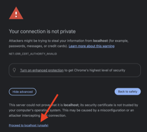

Client Setup Guide
This guide provides configuration examples for CloudXR.js client devices, including browser setup, web server hosting options, and connection modes. These examples demonstrate common deployment scenarios you may encounter.
Web Application Hosting
CloudXR.js client applications can be hosted using either HTTP or HTTPS protocols. We provide examples for both modes to help you choose the right approach for your deployment.
HTTP Mode (Development)
This example demonstrates the simplest configuration for local development and testing.
Example command:
npm run dev-server
Access URLs:
- Local:
http://localhost:8080/ - Network:
http://<server-ip>:8080/
Characteristics:
- Simplified setup with minimal configuration
- Supports connections to both
ws://(direct) andwss://(proxied) CloudXR Runtime endpoints - Requires browser security flags for immersive web functionality (see Meta Quest 3 or Pico 4 Ultra configuration)
- Recommended for: Local development, trusted network environments
HTTPS Mode (Development and Production)
This example demonstrates HTTPS hosting, which is used for both development with WebXR devices and production deployments. It provides encrypted client connections and is required for secure WebSocket connections.
Example command:
npm run dev-server:https
Access URLs:
- Local:
https://localhost:8080/ - Network:
https://<server-ip>:8080/
Characteristics:
- Automatically generates self-signed SSL certificates (for development) or custom certificates (for production)
- Requires
wss://(secure WebSocket) connection to CloudXR Runtime - Browsers enforce mixed content policy, blocking
ws://connections from HTTPS pages - Requires certificate trust configuration in client browser
- Recommended for: XR device testing, production deployments, remote access, security-sensitive environments
Connection Mode Examples
The following table shows example connection configurations between the web application server and CloudXR Runtime:
| Client Web Server | Runtime Connection | Status | Use Case |
|---|---|---|---|
| HTTP | ws://server-ip:49100 |
✅ Supported | Local development (simplest path) |
| HTTP | wss://proxy-ip:48322 |
✅ Supported | Testing proxy configuration |
| HTTPS | ws://server-ip:49100 |
❌ Blocked | Mixed content security policy violation |
| HTTPS | wss://proxy-ip:48322 |
✅ Supported | XR device testing, production deployment |
Important: When using HTTPS mode for your web application, you must configure a WebSocket proxy with TLS support. See the Networking Setup Guide - WebSocket Proxy Setup for configuration details.
Headset Configuration
This section provides configurations for supported XR headsets to enable immersive web functionality with CloudXR.js applications.
Pico 4 Ultra Configuration
Pico 4 Ultra has the following requirements:
Important:
- Requires Pico OS 15.4.4U or later
- HTTP mode is not supported - HTTPS mode is required for immersive web applications
Browser Configuration
See Trust SSL Certificates (HTTPS Mode) for browser configuration instructions.
Additional Configuration
Enable Hand Tracking:
- Open Settings on your Pico 4 Ultra
- Navigate to Interaction
- Select Auto Switch between Hands & Controllers for Interaction Controls
Disable System Gestures (Optional):
- Open Settings on your Pico 4 Ultra
- Navigate to Developer > Business Settings > System
- Disable Handtracking system gesture
Meta Quest 3 Configuration
Meta Quest 3 (OS version 79 or later) browser works with both HTTP and HTTPS modes. Choose the configuration that matches your hosting mode:
Option 1: Configure Insecure Origins (HTTP Mode)
When using HTTP mode (npm run dev-server), the Meta Quest 3 browser needs explicit permission to access WebXR APIs from non-HTTPS origins. Here's how to configure it:
-
Access Chrome flags:
- Open the Meta Quest 3 Browser
- Navigate to
chrome://flags
-
Enable insecure origins:
- Search for "insecure" in the search field
- Locate the flag:
unsafely-treat-insecure-origin-as-secure - Set the flag to Enabled
-
Add your development server:
- In the text field below the flag, enter your web server URL
- Format:
http://<server-ip>:8080 - Include the protocol (
http://) and port number (:8080) - Multiple URLs can be separated by commas if needed
-
Apply configuration:
- Click or tap outside the text field to defocus
- A "Relaunch" button will appear at the bottom of the screen
- Click Relaunch to apply changes
-
Verify configuration:
- Return to
chrome://flagsafter relaunch - Confirm the flag remains enabled and your URL is saved
- Return to
Option 2: Trust SSL Certificates (HTTPS Mode)
When using HTTPS mode (npm run dev-server:https), see Trust SSL Certificates (HTTPS Mode) for configuration instructions.
Verify WebXR Permissions
When connecting to a CloudXR.js application:
- The browser will prompt for WebXR permissions for the first time using it
- Select Allow when prompted
- The immersive session will begin after permission is granted
Tip: For rapid development and debugging, we recommend to test your CloudXR.js application on a desktop browser before checking in Meta Quest 3.
Trust SSL Certificates (HTTPS Mode)
When using HTTPS mode with self-signed certificates (for the web server and the WebSocket proxy), you need to configure the browser to trust these certificates.
Note: Certificate trust settings persist across browser sessions. You only need to perform this configuration once per certificate.
Trust WebSocket Proxy Certificate
-
Access the proxy endpoint:
-
In your headset browser, navigate to the sample client page and fill in the proxy IP as server IP and corresponding port, then click "click xxx to accept cert" as shown below. Or you can directly navigate to
https://<proxy-ip>:48322/
-
-
Accept certificate warning:
-
Click Advanced
-
Click Proceed to
<proxy-ip>(unsafe) or similar option
-
-
Expected behavior:
- The page may display a
501 Not Implementederror - This is expected - the proxy only handles WebSocket connections, not HTTP requests
- The certificate is now trusted for WebSocket connections
- The page may display a
Note: To persist certificates across container restarts, use a Docker volume when running the proxy:
docker run -v cloudxr-proxy-certs:/usr/local/etc/haproxy/certs .... The same certificate will be reused, so you only need to trust it once. Certificates are only regenerated if you explicitly remove the volume or mount your own certificate (see Networking Setup - Using Custom Certificates).
Trust Web Application Certificate
-
Access the web application:
- Open your XR headset browser
- Navigate to
https://<server-ip>:8080/
-
Accept certificate warning:
-
Click Advanced
-
Click Proceed to
<server-ip>(unsafe) or similar option
-
-
Verify access:
- The web application should load successfully
Network Configuration
For network and firewall configuration requirements, including port setup and bandwidth recommendations, see the Networking Setup Guide.
Common Issues and Solutions
WebXR API Not Available
Symptoms:
- Application displays "WebXR not supported" or similar error
- Connect button is disabled or missing
Solutions:
- Verify browser flags are configured correctly (HTTP mode example)
- Ensure you're accessing via the configured URL exactly as specified
- Confirm the browser has been relaunched after changing flags
- Try accessing via incognito/private browsing mode
Certificate Trust Issues
Symptoms:
- Connection fails with security warnings
- WebSocket connection shows "SSL certificate error"
Solutions:
- Complete the certificate trust process for both web server and proxy
- Verify you clicked "Proceed" on the certificate warning pages
- Clear browser cache and retry the trust process
- For persistent issues, regenerate certificates
Mixed Content Errors
Symptoms:
- Console shows "blocked by mixed content policy" errors
- WebSocket connection fails from HTTPS page
Solutions:
- When using
npm run dev-server:https, ensure runtime connection useswss://notws:// - Verify a WebSocket proxy is configured and running (see Networking Setup examples)
- Check that proxy URL is accessible and trusted
Connection Drops or Instability
Symptoms:
- Frequent disconnections during streaming
- Poor video quality or high latency
Solutions:
- Review Networking Setup Guide for bandwidth and latency requirements
- Verify firewall allows traffic on required ports
- Ensure Wi-Fi connection is on 5GHz or 6GHz band
- Check for network congestion from other devices
Next Steps
- Configure networking and firewall: Networking Setup Guide
- Set up Isaac Lab teleoperation: Isaac Lab Guide
- Set up Omniverse spatial streaming: Omniverse Guide